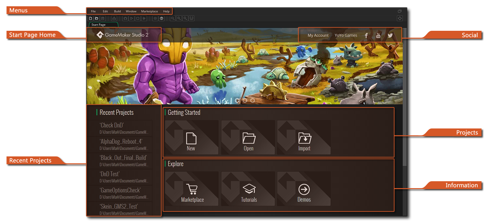
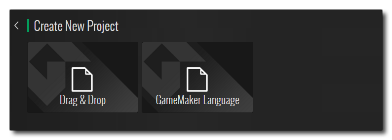
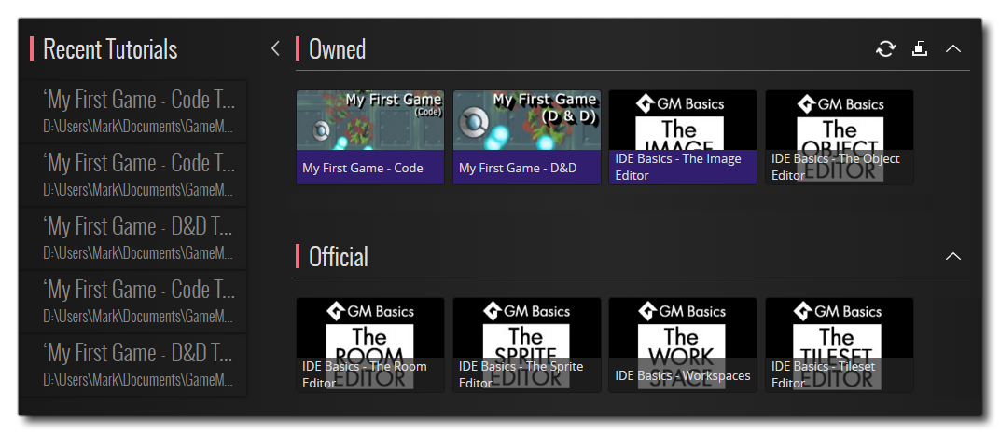
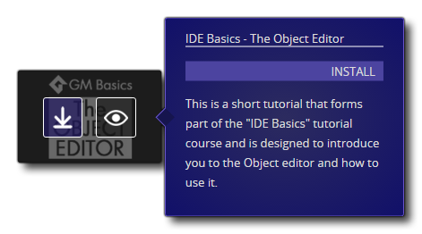
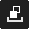

Wenn Sie GameMaker Studio 2 ersten Mal öffnen, werden Sie aufgefordert, sich bei Ihrem YoYo Konto anzumelden (oder registrieren Sie sich für eines, wenn Sie dies noch nicht getan haben - siehe hier ). Nach der Registrierung und Anmeldung wird die Hauptversion von GameMaker Studio 2 auf der Startseite geöffnet: 
Oben finden Sie die allgemeinen IDE-Menüs, die in den folgenden Abschnitten des Handbuchs erklärt werden:
Beachten Sie, dass in der oberen Menüleiste je nach Fenster, auf das Sie sich gerade konzentriert haben, kontextspezifische Menüoptionen angezeigt werden. Wenn Sie beispielsweise das Ressourcenbaumfenster im Fokus haben, haben Sie hier einen zusätzlichen Menüpunkt für " Ressourcen ". Der Rest der Startseite wird in den folgenden Abschnitten erläutert:
Wenn Sie die verschiedenen Bereiche der Startseite durchblättern, klicken Sie auf
Auf dieser gelangen Sie einfach zurück auf die Hauptseite.
Auf der linken Seite der Startseite sehen Sie eine Liste der vorherigen Projekte, die Sie öffnen können. Wenn Sie mit der Maus darüber fahren, können Sie den vollständigen Projektnamen und -pfad sehen und auf klicken
Die obere Leiste der Startseite enthält eine Reihe von Links, um die Navigation zu erleichtern. Sie sind unten aufgeführt:
- Mein Konto - Anmeldung in Ihrem YoYo Konto (siehe hier für weitere Details)
- YoYo Games - bringt Sie auf die Website von YoYo Games
- Social Media Icons - diese führen Sie zu den verschiedenen Social-Media-Seiten von YoYo Games, wo Sie über Neuigkeiten zu GameMaker Studio 2 auf dem Laufenden bleiben
Im Bereich Projekte können Sie Projekte erstellen, öffnen oder importieren. Sie können auf Neu klicken, um ein neues Projekt zu erstellen, auf Öffnen, um ein vorhandenes Projekt zu öffnen, oder auf Importieren, um ein GameMaker: Studio 1.4 zu öffnen GMX Projektdatei oder um eine komprimierte Datei zu öffnen YYZ GameMaker Studio 2 Projektdatei. Sowohl Öffnen als auch Importieren öffnen den Datei-Explorer, damit Sie zu der gewünschten Projektdatei navigieren können.
HINWEIS: GameMaker Studio 2 ist nicht vollständig abwärtskompatibel mit GameMaker: Studio 1.4-Projekten, aber importierte 1.4-Projekte sollten trotzdem ausgeführt werden, da veraltete Funktionen für Sie automatisch mithilfe von Kompatibilitätsskripten neu erstellt wurden. Ausführliche Informationen zu den möglichen Problemen und den Änderungen an GML finden Sie im Hilfeartikel " Portieren eines GMS 1.4-Projekts zu GameMaker Studio 2 sowie im Abschnitt " Veraltete Funktionen".Um ein neues Projekt zu erstellen, klicken Sie einfach auf die Schaltfläche Neu, um zum folgenden Bildschirm zu gelangen: 
GameMaker Studio 2 können Sie angeben, welche Art von Projekt erstellt werden soll. Sie können anhand Ihrer Programmierkenntnisse oder -gewohnheiten auswählen und auswählen. Die verfügbaren Optionen sind:
- Neues Drag & Drop-Projekt: Dadurch wird ein neues Projekt erstellt, in dem der Objekt-Editor (und alle anderen Editoren, die Code zulassen) für die Verwendung der Drag & Drop- Oberfläche von GameMaker Studio 2 wird. Weitere Informationen zu Drag and Drop (DnD™) finden Sie hier. Beachten Sie, dass dies keine exklusive DnD™ -Schnittstelle ist und dass Sie mit der rechten Maustaste zwischen DnD™ - und GML-Code wechseln können
.
- Neues GameMaker Sprachprojekt: Dadurch wird ein Projekt erstellt, bei dem die Standardprogrammierung mit der GameMaker Language (GML) erfolgt. Weitere Informationen zu GML finden Sie hier. Beachten Sie, dass dies keine exklusive GML-Schnittstelle ist und Sie mit der rechten Maustaste zwischen GML-Code und DnD™ wechseln können
Unabhängig davon, was Sie auswählen, werden Sie anschließend aufgefordert, einen Speicherort für das Projekt auszuwählen. Anschließend wird es in GameMaker Studio 2 geöffnet.
Im Informationsbereich der Startseite können Sie den YoYo Games Marketplace durchstöbern sowie Tutorials und Demos des YoYo Games Teams durchsuchen und öffnen, um bestimmte Aspekte von GameMaker Studio 2 zu zeigen (siehe unten für weitere Informationen).
Tutorials und Demos
Wenn Sie auf die Schaltflächen Tutorials oder Demos klicken, werden Sie zu einem Bildschirm geleitet, auf dem die Tutorials / Demos, die Sie besitzen, und die offiziellen Tutorials / Demos, die zum Herunterladen zur Verfügung stehen, angezeigt werden: 
Um irgendwelche der offiziellen Tutorials oder Demos herunterzuladen, klicken Sie einfach auf das Symbol für das, das Sie durchlaufen möchten und es wird oben im Abschnitt " Eigene " hinzugefügt (beachten Sie, dass Sie sich möglicherweise vorher auf dem Marktplatz anmelden müssen) kann gemacht werden). Sobald sich das Tutorial oder die Demo im Bereich "Eigene" befindet, können Sie die Maus darüber bewegen und entweder installieren oder die Informationen auf dem Marketplace anzeigen: 
Sobald ein Tutorial oder eine Demo installiert wurde, müssen Sie einfach darauf klicken, um es zu öffnen, und Sie werden aufgefordert, einen Speicherort anzugeben, an dem das Tutorial-Projekt gespeichert werden kann, bevor die IDE geöffnet wird. Beachten Sie, dass installierte Tutorials und Demos ein zusätzliches Symbol enthalten  die verwendet, um das Projekt von Ihrem Computer kann deinstallieren (dies ist nicht das Tutorial oder Demo von Ihrer „Besitz“ Liste nicht entfernen).
die verwendet, um das Projekt von Ihrem Computer kann deinstallieren (dies ist nicht das Tutorial oder Demo von Ihrer „Besitz“ Liste nicht entfernen).
Die Tutorials / Demos-Abschnitte auf der Startseite haben außerdem einige Schaltflächen, mit denen Sie Ihre Assets besser nutzen und navigieren können:
| Wenn Sie darauf klicken, wird die Projektliste vom Marktplatz aktualisiert, sodass Sie überprüfen können, ob etwas aktualisiert wurde, und die neuesten Versionen erhalten. | |
|  | Wenn Sie auf diese Schaltfläche klicken, wird die Ansicht zwischen den Lernprogrammen oder Demos, die Sie besitzen, und denen, die Sie installiert haben, umgeschaltet. |
Beachten Sie, dass Sie während der Bearbeitung eines Lernprogramms das Projekt jederzeit speichern und die IDE schließen oder sogar Projekte ändern können, ohne sich Sorgen um den Verlust machen zu müssen, da Lernprogramme die Seite und den Abschnitt, den Sie gerade bearbeiten, bei jedem Speichern des Projekts speichern.
Es ist auch erwähnenswert, dass Sie auch Tutorials und Demos von Drittanbietern auf dem Marktplatz finden können. Sobald diese erworben und Ihrem Konto hinzugefügt wurden, werden sie auch im Abschnitt "Owned" auf der entsprechenden Seite angezeigt.